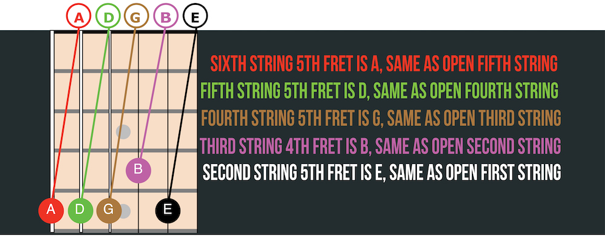

Always tune your guitar before playing. It is not uncommon to tune your guitar many times while playing, even sometimes in the middle of a song or between songs when playing live. If you are not tuned properly, nothing you play will sound right. Two ways to tune a guitar are using an electronic tuner and tuning the guitar to itself. Steps for tuning with an electronic tuner: 1. Play an open string and look at your tuner to decide if the note needs to be tuned up or down. 2. Repeat the note every few seconds to give a consistent sound for the tuner to pick up. 3. While playing a note and looking at the tuner (steps one and two), turn the tuning peg until the string is in tune. If a note is flat, it must be tuned up to pitch. If a note is sharp, it must be tuned down to pitch. It is best to always tune up to pitch so the tuning will hold. A beginner may find that it takes a long time to tune at first, but it will eventually become second nature. Bass Strings Treble Strings* Counter-clockwise to tune up Clockwise to tune up Clockwise to tune down Counter-clockwise to tune up *Use bass string tuning directions for all strings on guitars with six-in-line tuners like a Stratocaster or Telecaster.
When tuning a guitar to itself, it is helpful to use a reference pitch. A reference pitch may be available from another guitar, a piano or keyboard, or another instrument. If it is not possible to get a reference pitch, such as when picking up a neglected dusty guitar at a friend’s house, it is acceptable to approximate the sixth string (E) and tune the rest of the guitar using this reference pitch. If playing with another musician, make sure that both instruments are tuned to the same reference pitch. To tune a guitar to itself, play the sixth-string fifth-fret and tune the open fifth string to match this pitch. Follow the guide below to tune the remaining strings.
